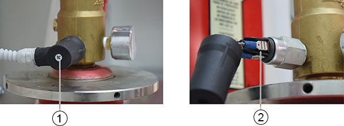
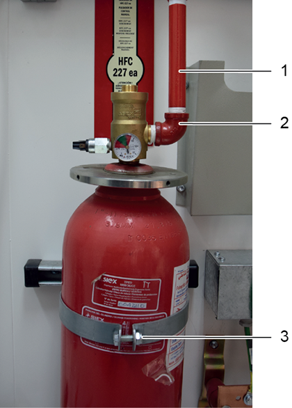

Removal of the HFC-227 Cylinder Extinguisher.
- Switch off the Fire Suppression System.
-
Unscrew and remove the Manual Actuator and the Electrical Actuator assembly (see item 1 and
2 in Figure 1)
by turning the Knurled Nut
(see item 6 in Figure 1)
counter clockwise.
Figure 1. HFC-227 Cylinder release actuator

- 1
- Manual Actuator
- 2
- Electrical Actuator
- 3
- Pressure Sensor
- 4
- Safety Pin
- 5
- Discharge Pipe Nut
- 6
- Knurled Nut
- 7
- Pressure Gauge
-
Remove the screw (see item 1 in Figure
2).
Figure 2. HFC-227 Cylinder Pressure Sensor 
- 1
- Screw
- 2
- Connector
- Remove the black rubber cap.
- Note down the cabling and the connectors (see item 2 in Figure 2).
- Remove the connectors.
- Disconnect the HFC-227 pipe by turning the nut anti-clockwise (see item 5 in Figure 1).
-
Remove the screw from the holder (see item 3 in Figure 3).
Figure 3. HFC-227 Bottle Fixation 
- 1
- Discharge Pipe
- 2
- Discharge Pipe Elbow
- 3
- Screw with Nut
- Remove the HFC-227 Bottle.
- Remove the Pipe Elbow (see item 2 in Figure 3) from the Bottle.